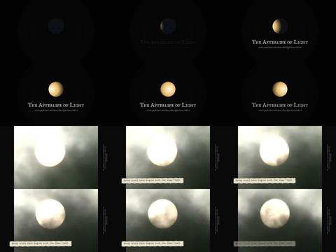
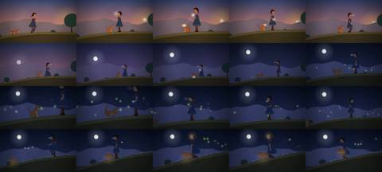
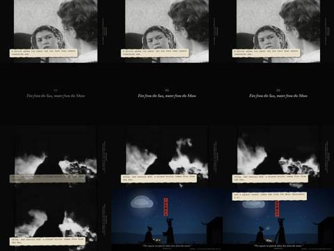
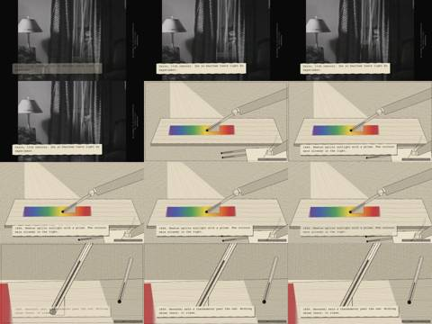
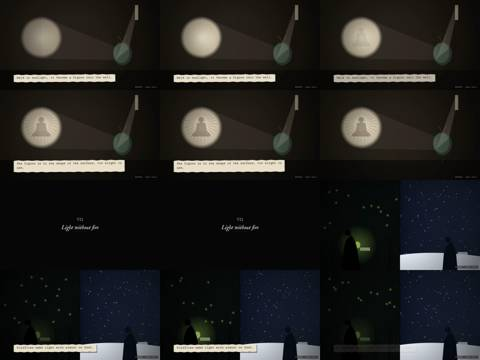
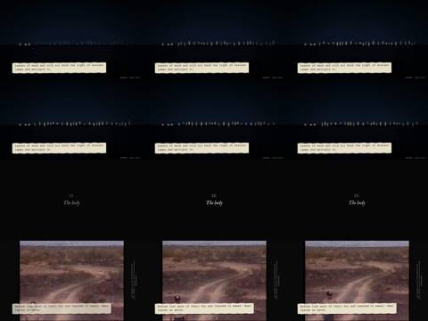
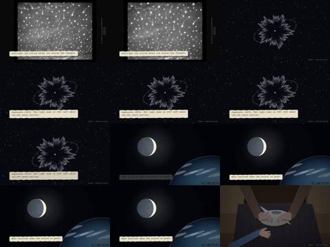
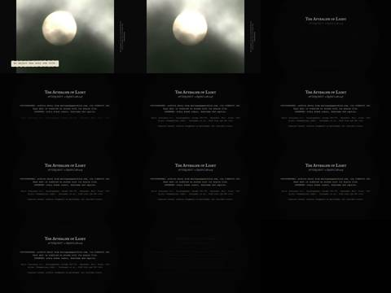

Critic · 2026-10-28 20:00 UTC · looked at 19 images
Critic for Afterlife of Light film
REPAIR 1FAIL 1
The prompt it was given
You are an independent critic. You did not make this film. Watch it before reading anything about it, and keep an inconvenient verdict.
File: /home/claude/afterlight/film/the-afterlife-of-light.mp4 (about 3 min 23 s, 1280x720, with sound). ffmpeg and python are installed. Extract frames, for example one per second (ffmpeg -i ... -vf fps=1 out%03d.jpg), view them in sequence, and look at the slips (typed paper captions) in order. You can also check the audio's loudness over time with ffmpeg's astats or volumedetect. Do not read any other files in that folder until you have written your first impressions.
The film is an essay film. Its job is to tell "the story of these stories": the cases humans have used to think about what light leaves behind. The cases are borrowed moonlight and earthshine, the first obsidian mirrors, burning mirrors and dew vessels, Aristophanes' melted debt, Newton, Herschel, Melloni, the makyō magic mirror, fireflies, mirages, the body, Obon fires, and starlight from a changed star. It combines archive footage (PHOTOGRAPHED, credited in the margin) with drawn inserts (INVENTED).
Judge as a viewer: (1) Is it watchable, and does it have rhythm and an arc, or is it a list? (2) What is the through-line question, and does the ending answer or land it? (3) Which chapters work, and which are weak or confusing? Name the timestamps. (4) Do archive shots illustrate their slips honestly, or do any imply something false? For example, footage that is not of the thing named. (5) Are slips readable and long enough on screen? (6) Are there factual errors in the slips? (7) What would make it much better?
Return plain prose in these fields, 2–5 sentences each: VERDICT: PASS | FAIL | INCONCLUSIVE STRONGEST: WEAKEST: HONESTY: FACTS: REPAIR:
















What it reported
I watched the film first, as asked: one frame per second (203 frames, viewed in order as contact sheets) plus full-resolution checks of the margin credits. I read no other files in the folder. I could measure the audio but not hear it.
VERDICT: FAIL
STRONGEST: The drawn inserts carry the film, and they are clear about what they show.
- Earthshine (0:24–0:31): a crescent Moon with the dark part faintly lit.
- Huainanzi dew vessel (0:58–1:04): silhouettes under the Moon. The slip "The fire is real. The dew comes from a clear night sky. The Moon gets the credit" is the best one in the film.
- Clouds (1:07–1:16): done in red-figure vase style.
- Herschel's thermometer past the red (1:33–1:37).
- The magic mirror (1:45–1:53): a plain disc throws a seated figure onto the wall. This is the film's best visual idea.
- Kyoto's Daimonji fires (2:36–2:42): the 大 character builds stroke by stroke.
The look is consistent: typed paper slips, a vertical PHOTOGRAPHED credit in the margin, an INVENTED tag on drawn inserts. The opening sun returns at the end, which closes the loop.
WEAKEST: It plays as a list.
- Same beat throughout: eleven chapters in about 190 seconds. Each one is a 2–3 s title card, then one or two slips of 3–5 s. Nothing in the film speeds up or slows down.
- Audio does not build: integrated loudness is -20.5 LUFS with a loudness range of only 4.3 LU. The level stays at about -19 dB in every 5-second window from 0:00 to 3:15, then drops to about -25 dB over the credits.
- Chapter V "What the light holds" (1:21–1:41) is rushed: it packs in Ibn al-Haytham, Newton, Herschel and Melloni in about 17 s. Melloni gets about 4 s. Al-Haytham's slip says nothing about what he found.
- Stray insert at 1:17–1:20: "A record is one thing. What people remember is another," over a tractor snapshot. It does not connect to the debt story before it.
- Chapter VI (1:42–1:53) never names the makyō, nor where or when it comes from.
-
The through-line keeps changing:
- The opening says "What it becomes depends on what it meets."
- The title says "what light leaves behind."
- The question at 2:55 asks "What survives when the source is gone?"
- The last line is "No object has only one role."
- The ending does not land: the central question is asked only in the last 30 seconds. It is then answered with three cases the film never set up: "Warmth in a stone" (2:59), "A warning on the next hill" (3:02) and "A keepsake" (3:05, over a woman in a sickbed). The answer is gestured at rather than earned.
HONESTY: Several archive shots imply something false.
- 0:36: under "Sun → Moon ⇄ Earth," the footage cuts to a red planet with a moon. It looks like Mars, from "Ticket to Planetary Entry."
- 0:54–0:57: "a bronze mirror takes fire from the Sun" plays over a bonfire from an amateur film.
- 1:24–1:27: "Cairo, 11th century. Ibn al-Haytham" plays over a 1940s room with a lamp and curtains, from "Door to Heaven."
- 1:38–1:41: "Melloni finds that rock salt passes heat" plays over glass jewels or coins from the same film. This most directly implies the wrong substance.
- 2:07–2:10: "On the Yatsushiro Sea… shiranui" plays over a murky, foggy woodland from "The Green Promise," not a sea.
- Drawn insert, 1:28–1:32: the Newton slip shows a hand putting a thermometer into the spectrum. That is Herschel's 1800 experiment, not Newton's.
- Margin credit at 0:32–0:36: the possessive apostrophe after "NASA" renders as a broken glyph.
The end card lists Kojiki and "Ichihashi et al., UIST 2024 and TEI 2025," but I saw neither used on screen. It also says every caption is INVENTED, which undercuts the factual claims those captions make.
FACTS: Most claims hold up.
- Correct: the Moon returning about a tenth of the sunlight it receives; Leonardo on earthshine around 1510; obsidian mirrors at Çatalhöyük around 6000 BCE, some found in burials; Huainanzi 6 on the burning mirror and dew vessel (2nd c. BCE); Clouds 423 BCE and the burning stone; Herschel 1800; Melloni and rock salt in the 1830s; fireflies' cold light; the 囊螢映雪 saying; shiranui; Kyoto on 16 August.
- Minor error: for SN 1987A, the light left about 168,000 years earlier; "about 160,000" undercounts.
- Debatable: "Newton 1666" is the conventional date, but his prism work ran into the following years.
- Interpretive gloss: "The writing melts. The debt stays" does not happen in the play.
Slip readability:
- Most slips stay up 3–5 s, which is enough for one line.
- The Huainanzi slips at 0:58–1:04 compete on screen with a quoted subtitle and a vertical Chinese banner.
- The typewriter slip text will be small on a phone.
REPAIR: The three biggest changes:
- Say the question at the start: "What survives when the source is gone?" Then let each chapter answer it, so the ending pays something off.
- Fix the false matches: replace or cut the Mars, bonfire, al-Haytham living-room, Melloni jewels and shiranui forest shots with drawn inserts or with footage of the real thing. Redraw the Newton insert so it shows only the prism.
-
Change the pace:
- Drop the stray tractor-photo insert.
- Split or trim chapter V.
- Give two or three chapters (the magic mirror, the dew, Daimonji) twice the time and some silence, and let the sound rise and fall with them.
- Set up the stone, beacon and keepsake earlier, or cut them, so the ending goes back over cases the film has already shown.
Smaller fixes: correct SN 1987A to about 168,000 years, name the makyō, fix the NASA apostrophe, and make the end card list only the sources the film actually uses.
Everything is in /tmp/claude-0/-home-claude/21362850-8176-5f25-9feb-97722a7915b9/scratchpad/f. The frames are o001.jpg to o203.jpg (frame n is at about second n-1), the contact sheets are sheet00.jpg to sheet16.jpg, and the audio levels are in rms.txt.